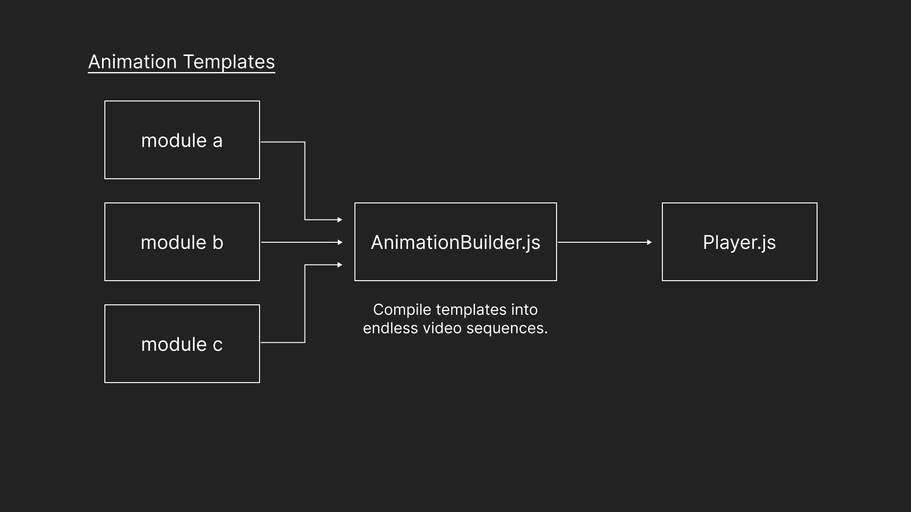
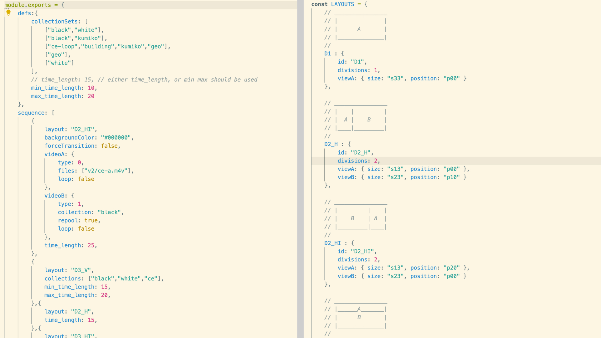
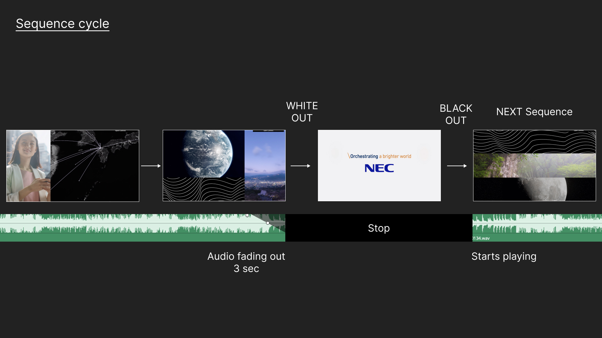

Kyushu Branch welcomes visitors with a permanent video installation at the entrance in Tenjin Business Center in Hakata opened in 2021. Our team developed motion graphics and a real-time generative application for the installation.
We originally created motion graphics with the client's motto “ONE NEC”, using different motifs inspired by the architectural facade, the unique light in the office lobby, traditional craft patterns of Fukuoka etc. The application generates thousands of video patterns mixing the motion graphics and movies chosen by the client on the 3×3 grids automatic split screen. It shows fresh video footage every 3 minutes.
“ONE NEC” Motion Typography
Motion Graphics
Video Footages
Prototyping of the automatic split screen in Touch Designer
Study of Image cropping variation in Touch Designer
Custom software development in Electron.
 Video sequences are generated from the original animation templates system. Each template module defines sequence of layouts, parameter randomness and etc.
The app generates approximately 3 minutes video sequences periodically. The company identity is displayed during it generates next sequence.
Output example #1
Output example #2